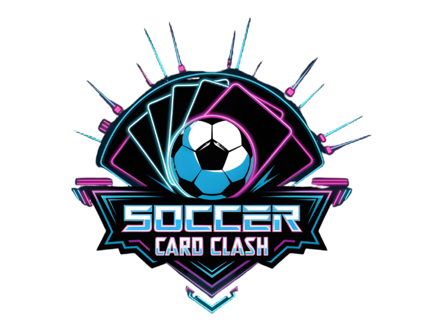

Inhaltsverzeichnis

Soccer Card Clash
🎮 Soccer Card Clash is a fast-paced, strategic 2-player card game where soccer meets tactical mind games.
🧠 Outmaneuver your opponent with clever attacks, boosts, and hand manipulation to score goals and win the match.
An unofficial Scala version of the Soccer Card Clash game for Software Engineering classes at Konstanz University of Applied Sciences.
⚽ Game Overview
- 🃏 Each player controls a hand of soccer-themed player cards.
- 🔄 Take turns as the attacker or defender.
- 🧠 Outsmart your opponent by choosing the right action at the right time.
- 🎯 Score goals by breaking through all defenders and beating the goalkeeper.
▶️ Demo Gameplay
✨ Features
🤖 Singleplayer Mode
Play against various AI opponents, each with its own unique strategy and behavior.
🧠 Multiple AI Strategies
Challenge AIs with different difficulty levels and tactics — from cautious defenders to aggressive attackers.
🤝 Multiplayer Mode
Play with friends in local multiplayer matches.
🎨 Unique Cyberpunk Design
Dive into a cyberpunk-inspired world with bold visuals, neon effects, and a futuristic interface.
⚔️ Strategic Gameplay
Mix and match actions like Swap, Boost, and Double Attack to outsmart your opponent.